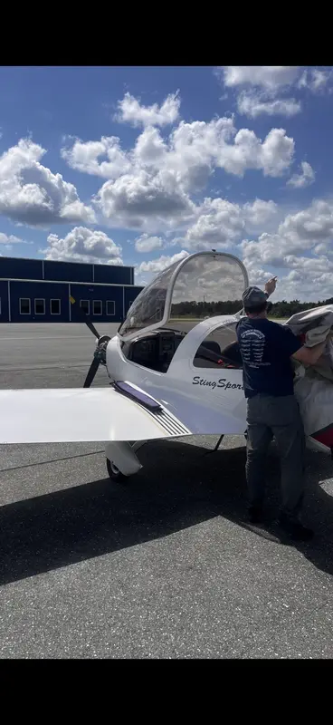

About the Owner/Operator
Joseph “Joe” Helminiak
The person named here is the person owners coordinate with: owner-operated ROTAX and light-sport support built from systems thinking, records discipline, and aircraft-owner experience.
Joseph "Joe" Helminiak is the owner/operator behind Lima Charlie Aero LLC, a veteran-owned business based at KAKH / Gastonia Municipal Airport and serving aircraft owners in the Charlotte, Gastonia, and Carolinas region by appointment.
Owner-operated aircraft support
Joseph Helminiak • LSRM-A • RFSC / ROTAX iRMT service-rated • KAKH / Gastonia, NC Records-first ROTAX and light-sport support. Aircraft-specific decisions stay tied to records, manuals, directives, and documented next steps.Why Lima Charlie Aero Exists
Built from an Aircraft-owner Problem, Not a Generic Repair-shop Script.
Lima Charlie Aero was built from a simple aircraft-owner problem: sometimes the issue is not obvious, the records do not tell the whole story at first glance, and the first answer is not always the right answer.
Joe's approach is to slow the problem down, identify the aircraft, review the documents, understand the symptom, and work toward the next practical step.
Owner Experience
The Rabbit Hole Shaped the Standard.
Joe came to this work as an aircraft owner who bought an airplane, relied on the normal pre-buy process, and still had an unexpected issue surface afterward.
That experience forced him into the kind of rabbit hole many owners recognize: records review, manufacturer documentation, service instructions, LOA / engineering-package coordination, ROTAX training, certificate privileges, and the practical question of what can actually be supported.
Military / Systems Background
Discipline, Documentation, Logistics, and Follow-through Matter Here.
Before Lima Charlie Aero, Joe served 23 years in the U.S. Army and retired as a Sergeant First Class. That retired U.S. Army senior NCO background matters because aviation maintenance support depends on many of the same habits that matter in military operations: accountability, documentation, configuration control, logistics, communication, and disciplined follow-through.
His broader background includes information systems management, business administration, systems engineering, program and project management, logistics, quality-assurance thinking, and traceability.
What Owners Feel
A Symptom is Not Treated as a Conclusion.
A mag drop, vibration, high oil temperature, fuel-pressure change, hose-age concern, or service interval is the starting point for a controlled review, not an excuse to throw parts at the aircraft.
Aircraft-first Support
Facts Before Guessing.
Lima Charlie Aero exists for the aircraft owner who knows something is not right but does not yet know whether the issue is ignition, fuel, cooling, rubber, gearbox, propeller, installation, records, or service-interval related.
From there, Joe works to identify the next supportable step. That may be a ROTAX service-planning discussion, an aircraft records review, a prebuy risk discussion, manufacturer coordination, dynamic propeller/vibration support, or a referral path when the issue is outside the supported scope.

Credentials / Boundaries
Proof Matters, but the Documents Still Control the Work.
Joe holds the LSRM-A — Light Sport Repairman Maintenance - Aircraft credential and RFSC / ROTAX iRMT service-rated 9 Series training, including Maintenance, Service, and Injected Installation.
Those credentials are important, but they are not a shortcut around the documents. Aircraft records, operating limitations, maintenance manuals, service bulletins, engine configuration, and applicable privileges still control the work.
Human Close
The Goal is to Make the Next Step Clear.
The goal is not to make the problem sound simple when it is not. The goal is to make the next step clear. That is the standard behind Lima Charlie Aero: start with facts, respect the documents, keep the owner informed, and work the problem until the next supportable step is defined.
Start Clean
Send the Aircraft, Location, and Symptom First.
The first useful step is still the aircraft context: aircraft, airport, engine model, records context, what changed, and the decision you need to make.
Aircraft Support
Need Aircraft Support?
Start with the aircraft, airport, engine model, and what changed. I will review the aircraft context and follow up with a clear next step.
Send Aircraft Details